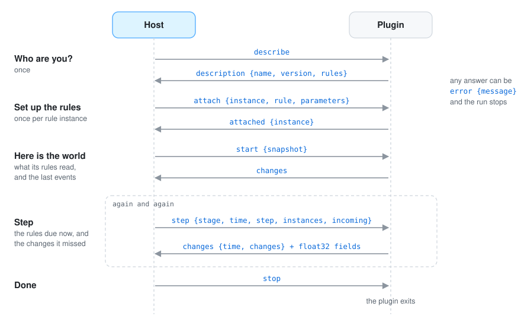

You only need this page to write a plugin in a language other than Go (the Go toolkit does all of this for you), or to understand what travels between the host and its plugins.
The idea is simple: the host starts the plugin as a program and they talk through the plugin’s standard input and output, one message at a time. The plugin’s standard error is free for its own logs. Any language that can read and write bytes can be a plugin. Protocol version: 2 (the host still accepts plugins of version 1; see contracts).
Every message is a frame: a length, so the reader knows how much to read, a small JSON header, and then any binary data. Binary data is only used for the numbers of fields, so that sending a grid of a million cells does not mean writing a million numbers as text.
┌──────────────┬──────────────────────────────────────────────┬──────────────────────────┐
│ 4 bytes │ header: JSON of that length │ attachments, one after │
│ length (LE) │ {"kind", "body", "attachments": [lengths]} │ another (raw bytes) │
└──────────────┴──────────────────────────────────────────────┴──────────────────────────┘
body is the message’s JSON; attachments lists the byte length of every attachment.set_field
change, in the order those changes appear in the message (in a change set, a snapshot or the
incoming changes of a step). The JSON of a field patch has no values.A conversation always follows the same order: the host asks who the plugin is, tells it which rules to set up, gives it the world, and then asks it to step again and again until it says stop.

| Host sends | Body | Plugin answers |
|---|---|---|
describe |
— | description: {protocol, name, version, summary, rules: [{name, summary, parameters, reads, writes, publishes, expects}]} |
attach |
{instance, rule, parameters} |
attached: {instance} |
start |
{snapshot: change set} |
changes: a change set |
step |
{stage, time, step, instances, incoming: [changes]} |
changes: a change set |
stop |
— | exits |
Any answer can instead be error with {message}; the host stops the simulation with it.
attach comes once per rule instance; the same rule can be attached several times.start’s snapshot holds the part of the world the plugin’s rules read, as add,
set_field and set_environment changes, plus the last event of every name it reads.step gives the stage time after the step (time), how much time it covers (step), the
instances to run in this order, and the changes other plugins made since the last message
that the plugin reads.A rule’s parameters are described as {name, type, default, summary} with type number,
boolean, text, vector, list or map.
Plugins never talk to each other, so they agree on names: one publishes elevation, another asks
for elevation. Since version 2 a rule says what it publishes and what it needs, with units, and
the host compares the rules a rules file attaches before the first step. The names are free
text: nothing has to be registered anywhere.
"publishes": [
{"name": "elevation", "what": "field", "unit": "m", "summary": "height of the ground"},
{"name": "biome", "what": "field", "unit": "index", "names": "biomes"},
{"name": "biomes", "what": "event", "properties": [{"name": "names"}]},
{"name": "river", "what": "kind", "properties": [{"name": "width", "unit": "world"}]}
],
"expects": [{"name": "elevation", "what": "field", "unit": "m", "required": true}]
what is field, kind, event or environment.unit is one of m, km, m², km², mm, °C, m/m, 1 (a share or a plain number),
index (a category; names is the event that names the values), world (the scene’s world
units), s or year. Fields need one; properties that are not quantities (a name, a class)
leave it out. Units are compared as text and never converted.properties are the properties of a kind’s entities or the members of an event’s data.expects says what the rule needs from what it reads; reads still decides what the host
sends it. required means the rule cannot work without it.The host refuses to start when:
what or unit, a field without a unit).It warns, and starts, when a rule reads something only a later rule of the rules file publishes (its first step will not have it) and when a field of categories has no event naming them.
A rule that lists names in writes but no publishes, or any rule of a version 1 plugin, is
not checked: the host says once which plugins those are, and counts their writes as published,
in no known unit, so what they write is not reported missing.
{"origin": "urban", "stage": "town", "time": 42, "changes": [ … ]}
The host fills origin and stage; a plugin sends time and changes.
{"op": "add", "entity": {"id": "house-7", "kind": "building",
"shape": {"outline": [[0, 0], [0.01, 0], [0.01, 0.01], [0, 0.01]], "height": 0.008, "batch": "buildings",
"color": [0.48, 0.18, 0.09, 1]},
"properties": {"use": "shop", "floors": 2}}}
{"op": "remove", "id": "house-7"}
{"op": "modify", "entity": {"id": "house-7", "properties": {"floors": 3, "use": null}}}
{"op": "set_field", "field": {"name": "elevation", "columns": 240, "rows": 180,
"extent": {"minimum_x": -6, "maximum_x": 6, "minimum_z": -4.5, "maximum_z": 4.5}}}
{"op": "set_field", "field": {"name": "elevation", "region": {"column": 10, "row": 4, "columns": 2, "rows": 2}}}
{"op": "set_environment", "environment": {"wind": {"direction": [1, 0, 0], "strength": 0.4}}}
{"op": "emit", "event": {"name": "indicators", "data": {"year": 42, "inhabitants": 3100}}}
{"op": "clear_area", "area": {"outlines": [[[0, 0], [1, 0], [1, 1]]], "keep": [], "nodes": ["forest"]}}
Entity: id, kind, parent, transform (16 numbers, column-major, as go-renderer),
shape, properties. In a modify, set members replace; properties merge, and a null removes one.
Shape: mesh, primitive (box) with size and offset, outline, line with width,
height, lift, batch, color (linear RGBA), hidden.
Field patch: name; columns, rows and extent only to create the field; region (a
rectangle of cells) to set part of it; without a region the values cover the whole field. Values,
row by row from the smallest z, arrive as the attachment.
Environment: sun_direction, celestial_pole, cloud_offset (vectors), wind
({direction, strength}), tide_angle (radians), snow ({level, blend}), foliage_tint
(linear RGBA, the alpha is the amount). Every set member replaces the current one.
host → describe
plugin→ description {"protocol": 1, "name": "coast", "version": "0.1.0", "rules": [{"name": "turn_beam", "reads": {"kinds": ["beam"]}}]}
host → attach {"instance": "night/turn_beam", "rule": "turn_beam", "parameters": {}}
plugin→ attached {"instance": "night/turn_beam"}
host → start {"snapshot": {"time": 0, "changes": [{"op": "add", "entity": {"id": "lighthouse-beam", "kind": "beam"}}]}}
plugin→ changes {"time": 0, "changes": []}
host → step {"stage": "night", "time": 0.016, "step": 0.016, "instances": ["night/turn_beam"]}
plugin→ changes {"time": 0.016, "changes": [{"op": "modify", "entity": {"id": "lighthouse-beam", "transform": [ … ]}}]}
…
host → stop